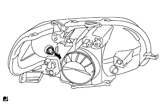
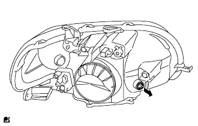
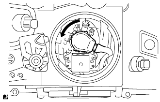
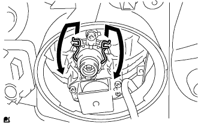
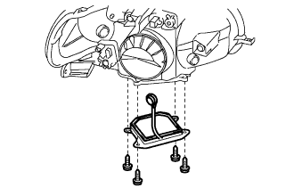
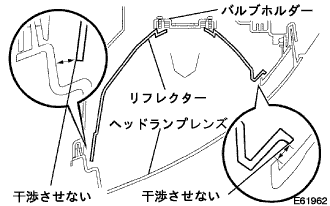
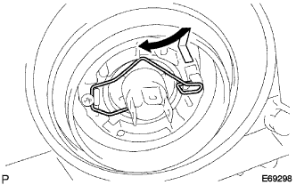

|
ソケットカバーを図の矢印方向に回して取りはずす。
ヘッドランプASSY 分解 |
| 1. フロント ターンシグナルランプ バルブ取りはずし |
|  |
フロントターンシグナルランプバルブをフロントターンシグナルランプソケットと一体で取りはずす。
フロントターンシグナルランプバルブをフロントターンシグナルランプソケットから取りはずす。
| 2. クリアランスランプ バルブ取りはずし |
|  |
クリアランスランプバルブをクリアランスランプソケットと一体で取りはずす。
クリアランスランプバルブをクリアランスランプソケットから取りはずす。
| 3. ヘッドランプソケットカバー取りはずし（ディスチャージヘッドランプ） |
|
ソケットカバーを図の矢印方向に回して取りはずす。
| 4. ディスチャージヘッドランプ バルブ取りはずし |
|  |
ライトコントロールコンピユータのソケット部を図の矢印方向に回して切り離す。
|  |
セットスプリングを図のように押して、ディスチャージヘッドランプバルブを取りはずす。
| 5. ヘッドランプライトコントロールコンピュータASSY取りはずし（ディスチャージヘッドランプ） |
|  |
スクリュー4本およびコネクタをはずし、ヘッドランプライトコントロールコンピュータASSYを取りはずす。
エーミングスクリューの左右調整用を左回転させ、ライトコントロールコンピュータのソケットが通るすき間を作る。
|  |
ライトコントロールコンピュータを取りはずす。
| 6. ヘッドランプソケットカバー取りはずし（ハロゲンヘッドランプ） |
ヘッドランプソケットカバーを取りはずす。
| 7. ヘッドランプ NO.1 バルブ取りはずし |
|  |
セットスプリングを図のように押して、ヘッドランプバルブを取りはずす。